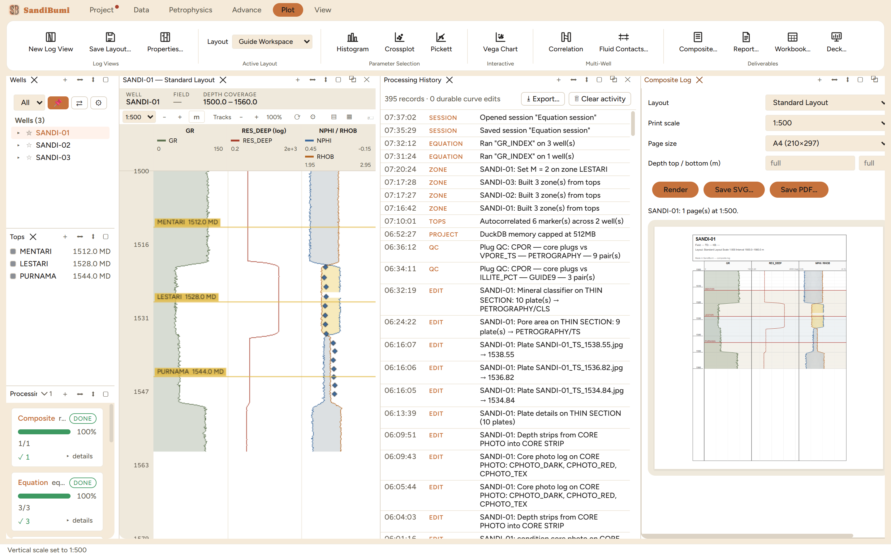

The Composite Log (Plot ▸ Composite…) is the print
deliverable: the log plot laid out at a true printed scale, where 1:200
means one metre of rock per five millimetres of paper exactly, rather
than a screenshot of whatever the screen happened to show. It
renders any saved layout, paginates it onto a chosen paper size, and
exports vector SVG or a multi-page PDF with nothing lost to
rasterization. Reach for it whenever a log plot leaves the application:
a report figure, a wall print, a file for the client.
The pane

The example well rendered onto A4: the title block carries
the well, the layout, the scale and the interval, the three formation
tops draw across the tracks, and the pane reports the pagination
("SANDI-01: 1 page(s) at 1:500.").
Layout picks what is drawn: the same named layouts the
log views use (Standard, Interpretation, Facies, Core, or any you
saved), so the print is the screen's arrangement, not a separate
definition that can drift.
Scale and page size pick the pagination. The pane does the
arithmetic and says so: the example well's 60 m spans one A4
page at 1:500 and two at 1:200, the first page covering
1500.0–1546.6 m, which is 46.6 m of rock, exactly
what an A4 page holds at 1:200 after the header.
The depth window is optional. Left at "full" it prints the
well's coverage; a top/bottom pair prints just the interval a chapter
or a client asked for.
Step by step
Open Plot ▸ Composite… with the well selected;
pick layout, print scale and page size.
Render. The pane reports the page count and shows each page;
◀ and ▶ walk a multi-page result.
Save SVG… for a single vector page, or Save
PDF… for the whole document in one file.
Reading the result
Check the title block first: it states well, layout, scale and
interval, which is what makes the sheet self-describing when it is far
from the software. Then check the pagination line against expectation:
pages × usable page height × scale should equal the printed
interval, and on the example it does (two pages at 1:200 for 60 m,
the first ending at 1546.6). Everything the screen draws prints the same
way (tops, crossover fills, class blocks, point tracks, image
strips), because the screen renderer and the print renderer
implement the same drawing contracts; a difference between the two is a
defect, not a setting.
QC and pitfalls
The scale is only true on paper printed at 100%. A PDF viewed
with "fit to page" or printed with scaling on is no longer 1:200.
The title block's scale statement is the promise; the print dialog
can silently break it.
Pick the scale for the question, not the page count. 1:500
fits the example well on one page but compresses thin beds; 1:200
doubles the paper and shows them. The pagination line makes the cost
visible before anything is saved.
SVG saves one page. A multi-page result wants the PDF; saving
SVG on page 1 of 2 delivers exactly what the preview shows, which is
half the well.